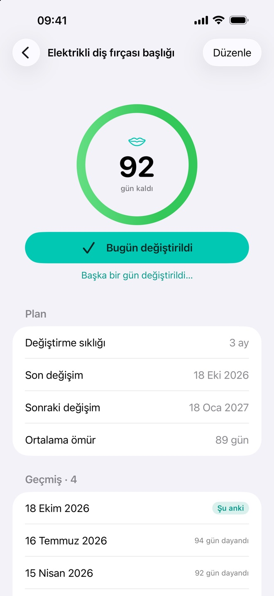
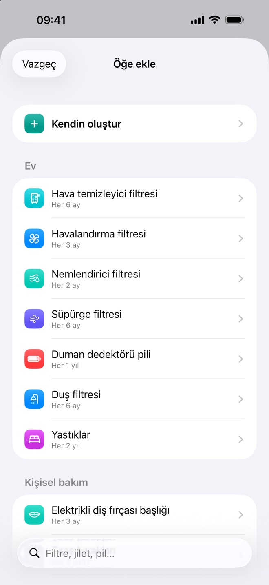
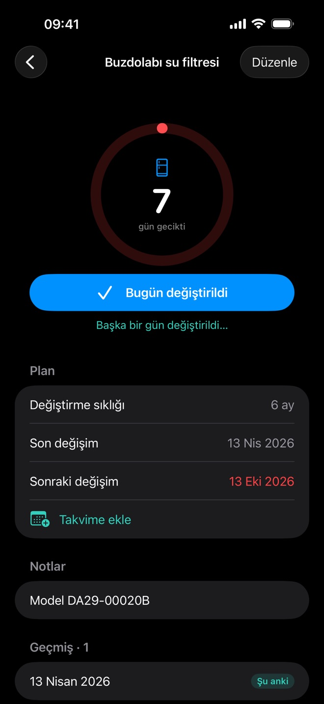
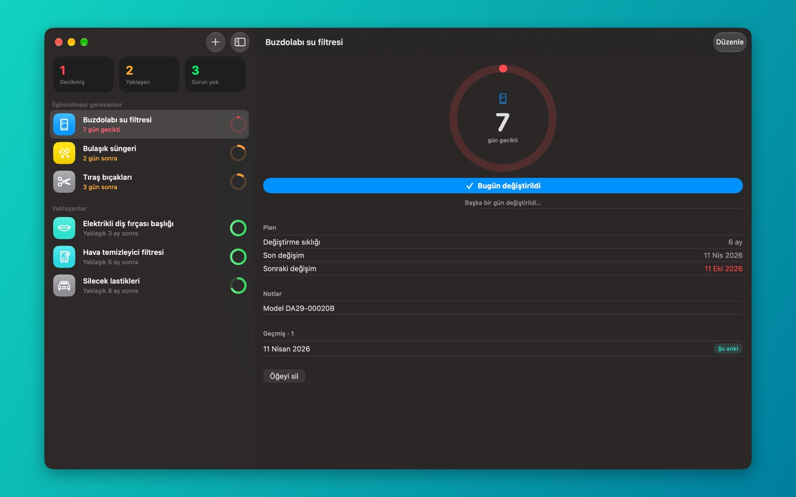
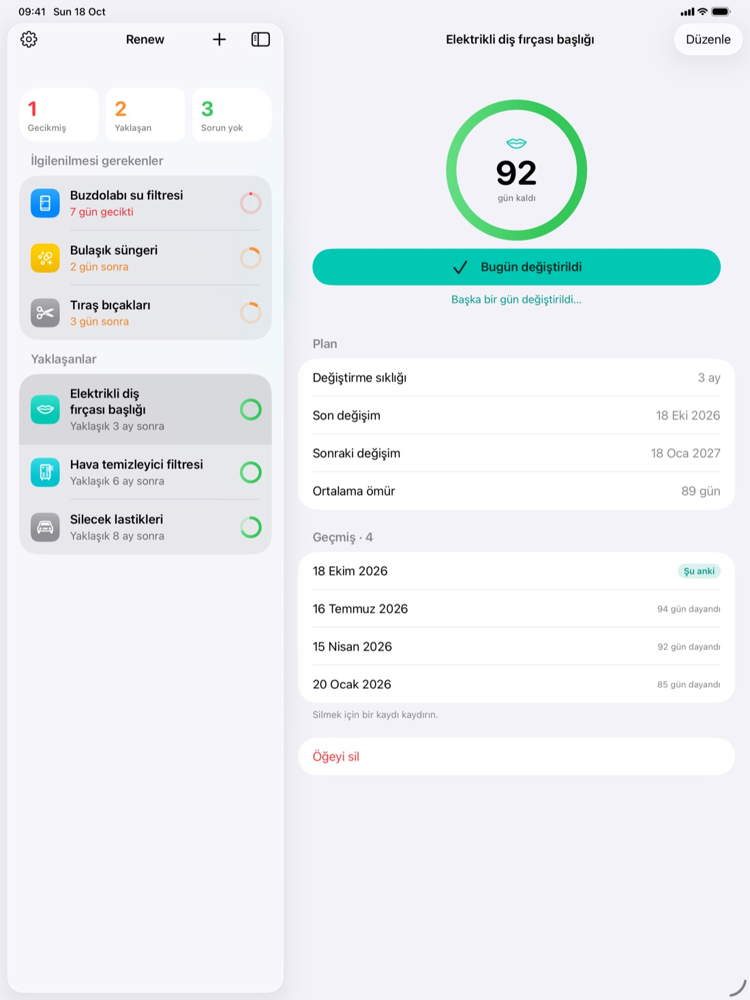
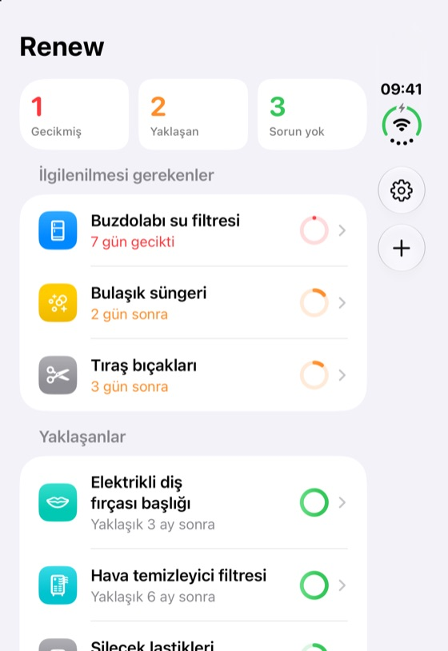
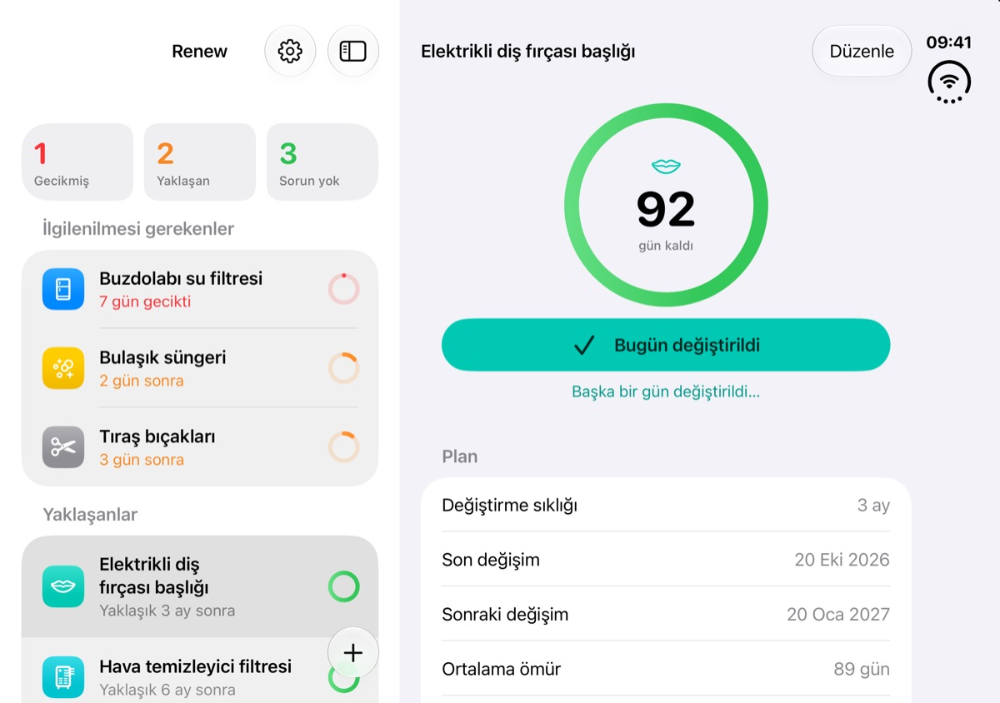

Tek dokunuşla kaydedin
Bir şeyi bugün değiştirildi olarak işaretlemek için dokunun ya da kaydırın veya başka bir tarih seçin. Geri sayım, gerçekten değiştirdiğiniz günden yeniden başlar.
iPhone, iPad ve Mac için
Renew; su filtreleri, diş fırçası başlıkları ve tıraş bıçakları gibi eskiyen şeyleri değiştirme zamanı geldiğinde size hatırlatır ve her değişimin geçmişini tutar.
Tipik değiştirme aralıklarına sahip 25 hazır öğeden seçin veya kendinizinkini oluşturun.
Değiştirme gününde, seçtiğiniz saatte bir bildirim gelir.
Değiştirildi olarak işaretleyin, geri sayım o günden yeniden başlasın.
Filtreleri, fırça başlıklarını ve bıçakları takip etmek için gereken her şey; gereksiz hiçbir şey yok.
Bir şeyi bugün değiştirildi olarak işaretlemek için dokunun ya da kaydırın veya başka bir tarih seçin. Geri sayım, gerçekten değiştirdiğiniz günden yeniden başlar.
Hatırlatma saatini seçin, bildirimin içinden değiştirildi olarak işaretleyin ya da erteleyin; hangi aygıtların hatırlatacağını siz belirleyin.
Her öğe için bir halka, kalan ömrü gösterir. Gecikmiş ve yaklaşan öğeler en üstte yer alır.
Geçmişteki her değişimi, her birinin ne kadar dayandığını ve ortalama ömrü görün.
Öğeleriniz özel iCloud hesabınız üzerinden eşzamanlı kalır. Her şeyi tek aygıtta mı tutmak istiyorsunuz? Eşzamanlamayı kapatın.
Hesap yok, reklam yok, takip yok. Verileriniz aygıtlarınızda ve kendi iCloud’unuzda kalır.



Bir kez satın alın, Renew’u iPhone, iPad ve Mac’inizde kullanın. Her birinde yerel bir uygulama, iCloud ile eşzamanlı.


Yeni
Katlıyken Renew listenizi dış ekranda gösterir. Açtığınızda en acil öğe listenin hemen yanında açılır. Yeniden katladığınızda listenize dönersiniz.


| iPhone | iOS 18 veya üstü |
|---|---|
| iPad | iPadOS 18 veya üstü |
| Mac | macOS 15 Sequoia veya üstü Apple çipi ve Intel |
| iPhone Duo | Dış ve iç ekran |
| Fiyat | Tek seferlik satın alma. Abonelik yok, uygulama içi satın alma yok. |
|---|---|
| Eşzamanlama | İsteğe bağlı. Her aygıtta aynı Apple Hesabı ile iCloud’a giriş yapılmış olmalıdır. |
| Hesap | Gerekmez. Çevrimdışı da çalışır. |
| Erişilebilirlik | VoiceOver, Dinamik Yazı, Karanlık Mod |
Renew’un sunucusu, analiz aracı ya da reklamı yoktur. Takip ettiğiniz hiçbir şey geliştiriciye ulaşmaz. Gizlilik politikasını okuyun
Sık sorulan soruları (İngilizce) okuyun ya da bir hatayı bildirmek veya özellik önermek için bir kayıt açın.